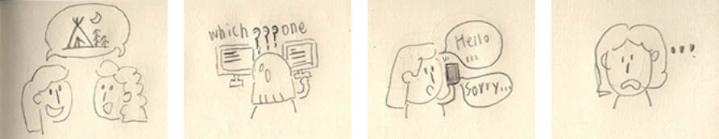
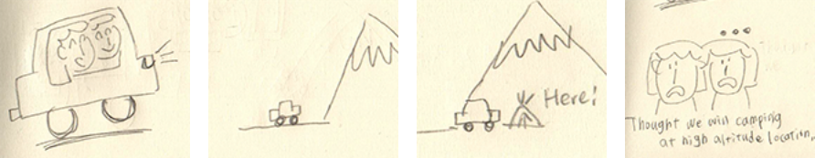
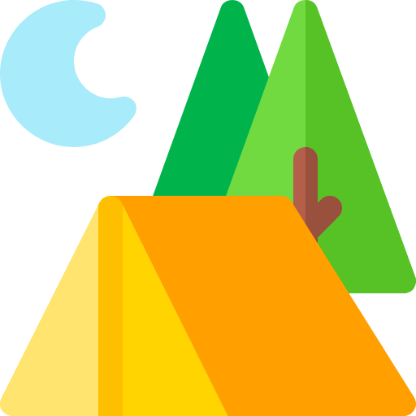
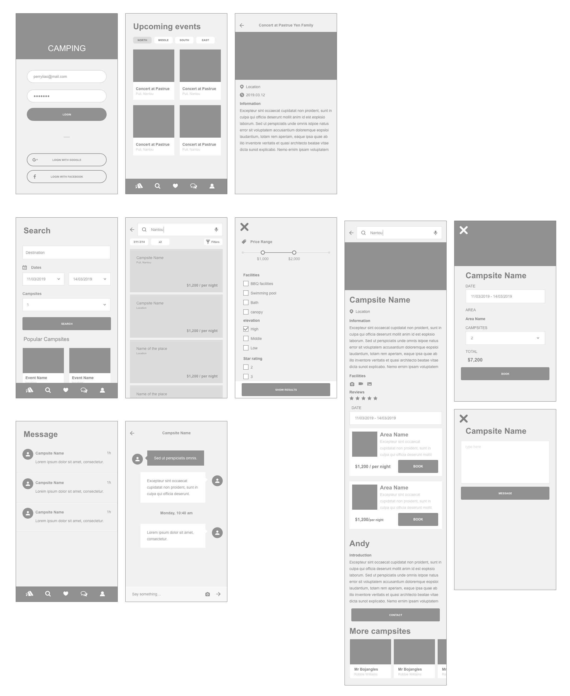
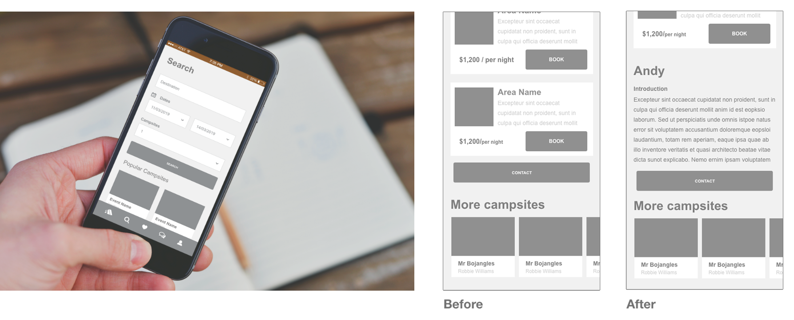

CAMPING
Problem
Have you ever had difficulty in camping with friends? For example, which camps host music events? Where to book eligible camps?In fact, we can find information online. However, information comes from different web pages, and it is difficult to get information at the same time.
Solution
“Camping” collects all of the camp information in Taiwan, so we will clearly know that which camp is about to hold events or which camps have vacancies during the New Year.Role
UX/UI, focusing on providing an easy-to-understand method of booking camps and obtaining information.Method & Tool
Method：Wireframing, Prototyping, User testingTool：Adobe XD
Design Process

Research
I interviewed five respondents from different industries and listed their questions about camping and their experience using existing camping apps.Findings & Facts
- Searching online for the booking method of each camp is different, including phone bookings, inquiries through facebook fan groups, etc.
- The existing Apps cannot quickly screen out the ideal camp because of the lack of many conditions, such as bathroom equipment, altitude, etc.
- People can not get a real evaluation of existing Apps.
- People must take the initiative to pay attention to certain camps to know upcoming events.
Storyboard
Scenario 1  Scenario 2 Ideation
Main Features
Focus on upcoming events information, booking, chat roomComparative Analysis
-
- This App provides a platform for people to book camps.
- Although this App provides filtering, some of the processes can be confusing. For example, after entering the date and conditions, it will still show the camp that cannot be reserved.
-

- It offers users a choice of reassuring camps with the function of ”reviews and ratings”.
- Users can directly contact the owner of the camp.
- Users can get camp information on the platform.
Design
UI Flow
After defining the problem, I created UI Flow to organize information architecture.
Wireframes
I created a wireframe for making the App's architecture clearer
Evaluate Functions and Flow
After finishing the wireframe, I used Adobe XD to convert it into a truly usable prototype. For user testing, I chose three tasks and invited two users to operate them. After the test, I found the location of the "contact" function on the information page a bit confusing, so I made some adjustments. High-Fidelity Prototype

Evaluation
Usability Tests
I set three scenes and invited three users to perform the tasks for each scene. During the test, I recorded the time spent by the users and the emotional responses.TASK 1
The user will go camping with friends, but one of the friends has been unable to
decide whether or not to participate in the trip because of concerns about the
sanitary condition.
You want to find a camp where your friend can participate with confidence.
Use CAMPING to find out which campsites that have high ratings given by the past
campers.
TASK 2
The user has been camping with friends many times and wants to find a camp with
music events to create a different experience for the next camping.
Use CAMPING to find camps that will host music events in the near future.
TASK 3
As booking the camp, due to the inability to arrive within the specified time, the
user needs to confirm with the camp owner whether other arrival time can be agreed.
Use CAMPING to contact the camp owner before booking.
Results
In the test, almost all users can easily find eligible camps and contact the camp owner according to screening conditions and evaluations.In addition, users also want to be able to have information about camping equipment rental. The requirement can be set to the same page in the "upcoming events" for future planning.